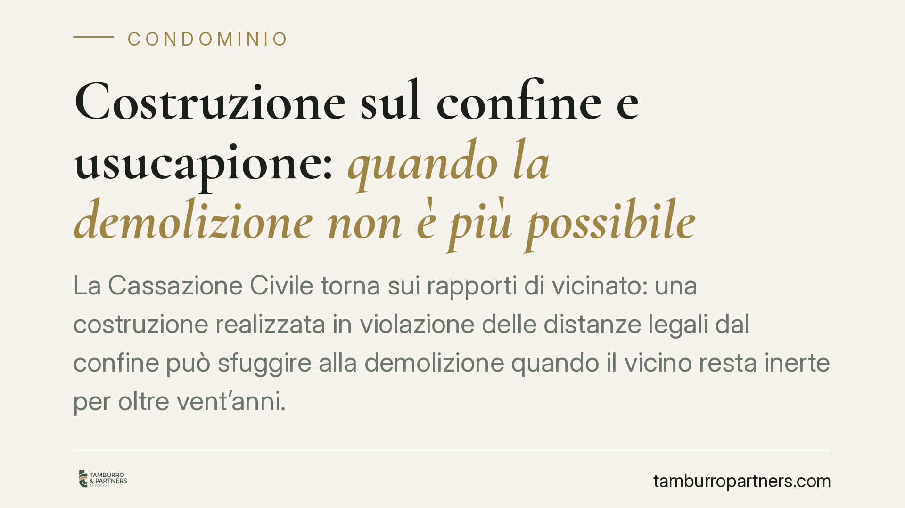

Costruzione sul confine e usucapione: quando la demolizione non è più possibile
La Cassazione Civile torna sui rapporti di vicinato: una costruzione realizzata in violazione delle distanze legali dal confine può sfuggire alla demolizione quando il vicino resta inerte per oltre vent'anni. In quel lasso di tempo può maturare l'usucapione della servitù, che consolida una situazione di fatto e preclude il ripristino. Una pronuncia che pesa sui diritti reali.

Il caso
Un proprietario edifica sul confine senza rispettare le distanze imposte dal codice civile. Il vicino, per anni, non reagisce: non diffida, non agisce in giudizio, tollera la situazione. Quando finalmente chiede la demolizione, si sente opporre un'eccezione decisiva: il tempo trascorso ha fatto maturare l'usucapione.
La Cassazione Civile, Sezione II, conferma un principio già radicato ma spesso trascurato: l'inerzia prolungata del vicino non è priva di conseguenze. Chi non tutela il proprio diritto entro i termini rischia di consolidare in modo definitivo la posizione di chi ha costruito irregolarmente.
Inquadramento normativo
Il codice civile fissa la disciplina in tema di distanze tra costruzioni. L'articolo 873 c.c. impone che le costruzioni su fondi finitimi, se non unite o aderenti, siano tenute a distanza non minore di tre metri, salvo distanze maggiori previste dai regolamenti locali. L'articolo 872 c.c. regola invece le conseguenze della violazione, riconoscendo al danneggiato la riduzione in pristino e il risarcimento.
Questo diritto, però, non è imprescrittibile in ogni sua forma. La violazione delle distanze può dare origine a una servitù: il vantaggio di mantenere la costruzione più vicina di quanto consentito. Tale servitù, se apparente e continua, può essere acquistata per usucapione ai sensi dell'articolo 1158 c.c., che richiede il possesso ininterrotto per vent'anni.
In parole semplici: chi costruisce troppo vicino al confine crea, di fatto, un peso sul fondo altrui. Se il vicino non reagisce per venti anni, quel peso si trasforma in diritto stabile. La demolizione non è più esigibile, perché la situazione è ormai coperta dall'usucapione.
Il punto decisivo
La distinzione è tecnica ma cruciale. L'azione per il ripristino delle distanze è imprescrittibile finché la violazione persiste, ma questo non impedisce che, parallelamente, maturi l'usucapione della servitù corrispondente alla minor distanza. È l'acquisto del diritto da parte del costruttore a chiudere la partita, non la prescrizione dell'azione del vicino.
Perché l'usucapione operi servono presupposti precisi: la costruzione deve essere visibile e permanente (carattere apparente), il possesso deve essere continuo e pacifico, e devono decorrere vent'anni. Il termine parte, di norma, dal completamento dell'opera che manifesta la violazione.
Implicazioni pratiche
Per il proprietario che subisce la costruzione irregolare, il messaggio è netto: la tolleranza ha un costo. Attendere, sperando in una soluzione bonaria, può significare perdere ogni possibilità di ottenere l'arretramento o la demolizione. Il tempo lavora a favore di chi ha costruito.
Per chi ha edificato in violazione delle distanze, la pronuncia offre una prospettiva difensiva concreta. Documentare da quando esiste la costruzione, e dimostrare l'inerzia del vicino nel ventennio, può neutralizzare una richiesta di demolizione anche a distanza di tempo.
Nel contesto condominiale il tema è ancora più delicato: sopraelevazioni, verande, manufatti addossati a muri comuni o a confini interni generano contenziosi frequenti. La consapevolezza dei termini è essenziale per non trovarsi spiazzati.
Cosa fare in concreto
- Verifica subito la data della violazione: ricostruisci quando l'opera contestata è stata completata, con fotografie, permessi e documentazione tecnica.
- Non tollerare in silenzio: se subisci una costruzione irregolare, invia una diffida formale e valuta l'azione giudiziaria senza attendere che maturi il ventennio.
- Interrompi il decorso del termine: un atto giudiziale idoneo interrompe l'usucapione. La semplice lamentela verbale non basta.
- Fai eseguire un accertamento tecnico: un geometra o un ingegnere può misurare le distanze effettive e stabilire la portata della violazione.
- Consultati prima di agire o di transigere: la scelta tra azione di ripristino, richiesta risarcitoria o accordo va calibrata sul caso concreto e sul tempo trascorso.
In sintesi
La decisione ribadisce un equilibrio delicato tra tutela della proprietà e certezza dei rapporti giuridici. Il diritto premia chi vigila e sanziona chi resta inerte. Nei rapporti di vicinato, così come in ambito condominiale, la tempestività non è un dettaglio: è la condizione stessa della tutela.
---
*Contributo informativo a cura di Tamburro & Partners - Avv. Giuseppe Tamburro. Non costituisce parere legale.*
Ogni condominio ha una storia a sé.
Se gestisci un'amministrazione e vuoi un confronto su una specifica questione condominiale, scrivi allo studio. Ti rispondiamo entro un giorno lavorativo.